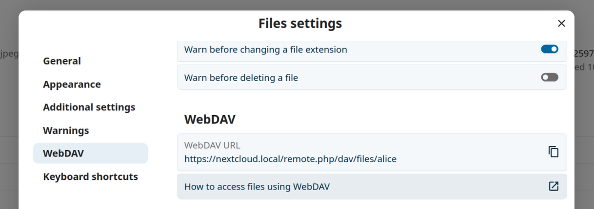

Accedere ai file di Nextcloud usando WebDAV
Nextcloud supporta completamente il protocollo WebDAV e puoi connetterti e sincronizzarti con i file di Nextcloud tramite WebDAV. In questo capitolo, imparerai come connettere Linux, macOS, Windows e dispositivi mobili al tuo server Nextcloud.
WebDAV è l’acronimo di Distributed Authoring and Versioning. Si tratta di un’estensione HTTP che semplifica la creazione, la lettura e la modifica di file ospitati su server Web remoti. Con un client WebDAV, puoi accedere ai tuoi file Nextcloud (incluse le condivisioni) su Linux, macOS e Windows in modo simile a qualsiasi condivisione di rete remota, rimanendo sincronizzato.
Prima di procedere con la configurazione di WebDAV, diamo un’occhiata veloce al modo consigliato per connettere i dispositivi client a Nextcloud.
Client ufficiali di Nextcloud per desktop e dispositivi mobili.
Il modo consigliato per sincronizzare un computer con un server Nextcloud è utilizzando i client di sincronizzazione ufficiali di Nextcloud. Puoi configurare il client per salvare i file in qualsiasi directory locale e puoi scegliere quali directory sul server Nextcloud sincronizzare. Il client visualizza lo stato attuale della connessione e registra tutte le attività, quindi sai sempre quali file remoti sono stati scaricati sul tuo PC e puoi verificare che i file creati e aggiornati sul tuo PC locale siano correttamente sincronizzati con il server.
Il modo consigliato per sincronizzare dispositivi Android e Apple iOS è utilizzando le app mobili ufficiali di Nextcloud.
Per connettere le app ufficiali di Nextcloud a un server Nextcloud, utilizza lo stesso URL che usi per accedere a Nextcloud dal tuo browser web - es.:
https://cloud.example.com
Se Nextcloud è installato in una sottodirectory denominata «nextcloud»:
https://example.com/nextcloud
Client WebDAV di terze parti
Se preferisci, puoi anche connettere il tuo computer al tuo server Nextcloud utilizzando qualsiasi client di terze parti che supporti il protocollo WebDAV (incluso quello che potrebbe essere integrato nel tuo sistema operativo).
Puoi anche utilizzare app di terze parti in grado di supportare WebDAV per connettere il tuo dispositivo mobile a Nextcloud.
Quando si utilizzano client di terze parti, è importante tenere presente che potrebbero non essere ottimizzati per l’uso con Nextcloud o potrebbero non implementare funzionalità che si ritengono importanti per il proprio caso d’uso.
I client mobili segnalati dalla comunità di Nextcloud includono:
L’URL da utilizzare durante la configurazione delle app di terze parti per connettersi a Nextcloud è un po” più lungo rispetto a quello per i client ufficiali:
https://cloud.example.com/remote.php/dav/files/USERNAME/
Se Nextcloud è installato in una sottodirectory denominata «nextcloud»:
https://example.com/nextcloud/remote.php/dav/files/USERNAME/
Nota
Quando si utilizza un client WebDAV di terze parti (incluso il client integrato nel sistema operativo), è consigliabile utilizzare una password per l’applicazione per l’accesso anziché la password normale. Oltre a migliorare la sicurezza, questo incrementa significativamente le prestazioni. Per configurare una password per l’applicazione, accedere all’interfaccia Web di Nextcloud, fare clic sull’avatar in alto a destra e selezionare Impostazioni personali. Quindi selezionare Sicurezza nella barra laterale sinistra e scorrere fino in fondo. Qui è possibile creare una password per l’applicazione (che può anche essere revocata in futuro senza modificare la password dell’utente principale).
Nota
Negli esempi seguenti, sostituisci example.com/nextcloud con l’URL del tuo server Nextcloud (ometti la parte della directory se l’installazione si trova nella radice del tuo dominio), e USERNAME con il nome utente dell’utente che si sta connettendo.
See the WebDAV URL, to be found in Files Settings -> WebDAV in the Files on your Nextcloud account.

Accedere ai file usando Linux
Puoi accedere ai file nel sistema operativo Linux utilizzando i seguenti metodi.
Gestore file Nautilus
When you configure your Nextcloud account in the GNOME Control Center, your files will automatically be mounted by Nautilus as a WebDAV share, unless you deselect file access.
Puoi anche montare i tuoi file Nextcloud manualmente. Usa il protocollo davs:// per connettere il gestore file Nautilus alle tue risorse condivise Nextcloud:
davs://example.com/nextcloud/remote.php/dav/files/USERNAME/
Nota
Se la tua connessione al server non è protetta con HTTPS, usa dav:// invece che davs://:

Nota
Lo stesso metodo funziona per altri gestori di file che utilizzano GVFS, come il gestore di file Caja di MATE e il gestore di file Nemo di Cinnamon.
Accedere ai file con KDE e il gestore file Dolphin
Vai su Impostazioni di sistema -> Rete -> Account online
Fai clic su «Aggiungi account…»
Fai clic su Nextcloud
Inserisci l’indirizzo del tuo server
Segui le istruzioni sullo schermo per accedere
Dopo aver effettuato l’accesso, assicurati di abilitare «Archiviazione» nella sezione «Usa questo account per»
Ora puoi accedere ai tuoi file in Dolphin in «Rete» nella barra laterale
(Facoltativo) Per aggiungerlo come collegamento nella barra laterale, fai clic con il pulsante destro del mouse su «Archiviazione Nexcloud», quindi su «Aggiungi a posizioni»
(Facoltativo) Per personalizzare il collegamento, fai clic con il pulsante destro del mouse sul collegamento nella barra laterale, quindi seleziona «Modifica…» e personalizza l’icona e l’etichetta come preferisci
Creare montaggi WebDAV sulla riga di comando Linux.
Puoi creare il montaggio di WebDAV dalla riga di comando di Linux. Ciò è utile se preferisci accedere a Nextcloud come qualunque altro filesystem remoto montato. Il seguente esempio mostra come creare un montaggio personale e averlo montato automaticamente ogni qual volta accedi al tuo Linux computer.
Installa il driver del filesystem
davfs2di WebDAV, che ti consente di montare le condivisioni WebDAV come ogni altro filesystem remoto. Usa questo comando per installarlo su Debian/Ubuntu:apt-get install davfs2
Usa questo comando per installarlo su CentOS, Fedora, e openSUSE:
yum install davfs2
Aggiungi il tuo utente al gruppo
davfs2:usermod -aG davfs2 <username>
Quindi crea una directory
nextcloudnella tua directory home come punto di mount e.davfs2/per il tuo file di configurazione personale:mkdir ~/nextcloud mkdir ~/.davfs2
Copia
/etc/davfs2/secretsin~/.davfs2:cp /etc/davfs2/secrets ~/.davfs2/secrets
Impostati come il proprietario e modifica i permessi di lettura-scrittura disponibili solo al proprietario.
chown <linux_username>:<linux_username> ~/.davfs2/secrets chmod 600 ~/.davfs2/secrets
Aggiungi le tue credenziali di accesso di Nextcloud alla fine del file
secrets, usando l’URL del tuo server Nextcloud e il nome utente e la password di Nextcloud.https://example.com/nextcloud/remote.php/dav/files/USERNAME/ <username> <password> or $PathToMountPoint $USERNAME $PASSWORD for example /home/user/nextcloud john 1234
Aggiungi le informazioni di montaggio a
/etc/fstab:https://example.com/nextcloud/remote.php/dav/files/USERNAME/ /home/<linux_username>/nextcloud davfs user,rw,auto 0 0
Allora verifica che si monti e si autentichi eseguendo i seguenti comandi. Se l’hai impostato correttamente non avrai bisogno dei permessi di root.
mount ~/nextcloud
Dovresti essere in grado anche di smontarlo:
umount ~/nextcloud
Ora, ogni volta che accederai al tuo sistema Linux, la tua condivisione di Nextcloud dovrebbe essere montata automaticamente tramite WebDAV nella tua cartella ~/nextcloud. Se preferisci montarla manualmente, cambia auto in noauto in «/etc/fstab.
Problemi noti
Problema
Risorsa temporaneamente non disponibile
Soluzione
Se riscontri problemi quando crei un file in una cartella, modifica /etc/davfs2/davfs2.conf e aggiungi:
use_locks 0
Problema
Avvisi relativi al certificato
Soluzione
Se utilizzi un certificato di sicurezza auto-firmato, avrai un avviso. Per modificarlo, devi configurare davfs2 in modo da riconoscere il tuo certificato. Copia miocertificato.pem in /etc/davfs2/certs/. Poi modifica /etc/davfs2/davfs2.conf ed elimina il commento della linea servercert. Ora aggiungi il percorso della tua certificazione come nell’esempio.
servercert /etc/davfs2/certs/mycertificate.pem
Accedere ai file usando macOS
Nota
The macOS Finder suffers from a series of implementation problems and should only be used if the Nextcloud server runs on Apache and mod_php, or Nginx 1.3.8+. Alternative macOS-compatible clients capable of accessing WebDAV shares include open source apps like Cyberduck (see instructions here) and Filezilla. Commercial clients include Mountain Duck, Forklift, Transmit, and Commander One.
Accedere ai file tramite macOS Finder:
Dal menu in alto del Finder, scegli Vai > Connetti al server…:

Quando si apre la finestra Connetti al server…, inserisci l’indirizzo WebDAV del tuo server Nextcloud nel campo Indirizzo del server:, ad esempio:
https://cloud.YOURDOMAIN.com/remote.php/dav/files/USERNAME/

Fai clic su Connetti. Il tuo server WebDAV dovrebbe apparire sul desktop come un’unità di disco condivisa.
Accedere ai file usando Microsoft Windows
Se si utilizza l’implementazione nativa di WebDAV di Windows, è possibile mappare Nextcloud su un nuovo drive utilizzando Esplora risorse di Windows. La mappatura su un drive consente di navigare nei file memorizzati su un server Nextcloud allo stesso modo in cui si naviga nei file memorizzati in un drive di rete mappato.
L’utilizzo di questa funzionalità richiede una connessione alla rete. Se vuoi archiviati i tuoi file non in linea, usa il Client Desktop per sincronizzare i file nel tuo Nextcloud in una o più cartelle del tuo disco fisso locale.
Nota
Windows 10 ora predefinisce l’abilitazione dell’autenticazione di base se HTTPS è abilitato prima di mappare il tuo drive.
Su versioni più datate di Windows, è necessario consentire l’uso dell’autenticazione di base nel Registro di sistema di Windows:
Avvia
regedite naviga fino aHKEY_LOCAL_MACHINE\SYSTEM\CurrentControlSet\Services\WebClient\Parameters.Crea o modifica il valore
BasicAuthLevel(per Windows Vista, 7 e 8) oUseBasicAuth(per Windows XP e Windows Server 2003) come tipoDWORDe imposta il suo valore su1per le connessioni SSL. Un valore di0indica che l’autenticazione di base è disabilitata, mentre un valore di2consente sia connessioni SSL che non SSL (non raccomandato).Quindi esci dall’Editor del Registro di sistema e riavvia il computer.
Associare drive con la riga di comando
Il seguente esempio mostra come associare un drive usando la riga di comando. Per associare il drive:
Apri il prompt dei comandi su Windows.
Digita la seguente riga nel prompt dei comandi per associare il drive Z del computer:
net use Z: https://<drive_path>/remote.php/dav/files/USERNAME/ /user:youruser yourpassword
con<drive_path> come URL del tuo server Nextcloud. Ad esempio:
net use Z: https://example.com/nextcloud/remote.php/dav/files/USERNAME/ /user:youruser yourpassword
Il computer associa i file del tuo account Nextcloud al drive con lettera Z.
Errore
Se viene visualizzato il seguente errore Si è verificato un errore di sistema 67. Impossibile trovare il nome della rete., oppure si verificano disconnessioni frequenti, aprire l’app Servizi e assicurarsi che il servizio WebClient sia in esecuzione e avviato automaticamente all’avvio.
Nota
Anche se non raccomandato, è possibile montare il server Nextcloud utilizzando HTTP, lasciando la connessione non crittografata.
Se prevedi di utilizzare connessioni HTTP su dispositivi mentre ti trovi in un luogo pubblico, ti consigliamo vivamente di utilizzare un tunnel VPN per fornire la necessaria sicurezza.
Una sintassi di comando alternativa è:
net use Z: \\example.com@ssl\nextcloud\remote.php\dav /user:youruser
yourpassword
Associare i drive con Windows Explorer
Per mappare un’unità utilizzando Microsoft Windows Explorer:
Apri Esplora risorse sul tuo computer MS Windows.
Fai clic con il tasto destro sulla voce Computer e seleziona Associa drive di rete… dal menu a tendina.
Scegli un drive di rete locale a cui vuoi associare Nextcloud.
Specifica l’indirizzo della tua istanza Nextcloud, seguito da /remote.php/dav/files/NOMEUTENTE/.
Ad esempio:
https://example.com/nextcloud/remote.php/dav/files/USERNAME/
Nota
Per i server protetti da SSL, seleziona Riconnetti all’accesso per garantire che il mapping sia persistente durante i riavvii successivi. Se desideri connetterti al server Nextcloud come un utente diverso, seleziona Connetti utilizzando credenziali diverse.

Fai clic sul pulsante
Fine.
Windows Explorer associa il drive di rete, rendendo disponibile la tua istanza Nextcloud.
Accedere ai file usando Cyberduck
Cyberduck è un browser open source per FTP, SFTP, WebDAV, OpenStack Swift e Amazon S3 progettato per trasferimenti di file su macOS e Windows.
Nota
Questo esempio usa Cyberduck versione 4.2.1.
Per usare Cyberduck:
Specifica un server senza alcuna informazione sul protocollo di partenza.
Per esempio:
example.comSpecifica la porta appropriata.
La porta che scegli dipende dal fatto che il tuo server Nextcloud supporti o meno SSL. Cyberduck richiede che tu selezioni un tipo di connessione diverso se prevedi di utilizzare SSL.
- Per esempio:
80per WebDAV non criptato443per WebDAV sicuro (HTTPS/SSL)
Utilizza il menu a discesa “Altre opzioni” per aggiungere il resto dell’URL del tuo WebDAV nel campo “Percorso”.
Per esempio:
remote.php/dav/files/USERNAME/
Ora Cyberduck consente l’accesso ai file del server Nextcloud.
Problemi noti
Problema
Windows non si connette usando HTTPS.
Soluzione 1
Il client WebDAV di Windows potrebbe non supportare il Server Name Indication (SNI) per le connessioni cifrate. Se ricevi un errore montando un’istanza di Nextcloud con protocollo SSL, contatta il tuo provider sull’assegnazione di un indirizzo IP dedicato al tuo server basato su SSL.
Soluzione 2
Il client WebDAV di Windows potrebbe non supportare le connessioni TLSv1.1 e TLSv1.2. Se hai limitato la configurazione del server per fornire solo TLSv1.1 e versioni successive, la connessione al tuo server potrebbe non riuscire. Fai riferimento alla documentazione WinHTTP per ulteriori informazioni.
Problema
Ricevi il seguente messaggio di errore: Errore 0x800700DF: La dimensione del file supera il limite consentito e non può essere salvato.
Soluzione
Windows limita la dimensione massima di un file trasferito da o verso una condivisione WebDAV. È possibile aumentare il valore FileSizeLimitInBytes in HKEY_LOCAL_MACHINE\\SYSTEM\\CurrentControlSet\\Services\\WebClient\\Parameters facendo clic su Modifica.
Per aumentare il limite al valore massimo di 4 GB, selezionare Decimale, immettere il valore 4294967295 e riavviare Windows o riavviare il servizio WebClient.
Problema
L’aggiunta di un’unità WebDAV su Windows tramite i passaggi descritti sopra non visualizza la dimensione corretta dello spazio disponibile in Nextcloud e mostra invece la dimensione dell’unità C: con il relativo spazio disponibile.
Risposta
Purtroppo, si tratta di una limitazione intrinseca di WebDAV stesso, poiché non fornisce un modo per il client di ottenere lo spazio libero disponibile dal server. Windows automaticamente utilizza la dimensione dell’unità C: con il suo spazio disponibile come alternativa. Quindi, purtroppo, non esiste una soluzione reale a questo problema.
Problema
L’accesso ai tuoi file da Microsoft Office tramite WebDAV non funziona.
Soluzione
Problemi noti e le loro soluzioni sono documentati nell’articolo KB2123563.
Problema
Non è possibile mappare Nextcloud come un’unità WebDAV in Windows utilizzando un certificato autofirmato.
Soluzione
Accedi alla tua istanza Nextcloud tramite il tuo browser Web preferito.
Fai clic fino a raggiungere l’errore del certificato nella barra di stato del browser.
Visualizza il certificato, quindi dalla scheda Dettagli seleziona «Copia su file».
Salva il file sul tuo desktop con un nome arbitrario, ad esempio
myNextcloud.pem.Vai al menu Start > Esegui, digita MMC e fai clic su «OK» per aprire Microsoft Management Console.
Vai su File > Aggiungi/Rimuovi Snap-In.
Selezionare Certificati, fare clic su «Aggiungi», scegliere «Il mio account utente», quindi «Fine» e infine «OK».
Scorri fino a Autorità di certificazione radice attendibili, Certificati.
Fai clic con il tasto destro su Certificato, seleziona Tutte le attività, e poi Importa.
Seleziona il certificato salvato sul Desktop.
Seleziona Posiziona tutti i certificati nel seguente archivio e clicca su Sfoglia.
Seleziona la casella Mostra archivi fisici, espandi Autorità di certificazione root attendibili, seleziona Computer locale, fai clic su «OK» e completa l’importazione.
Controlla l’elenco per assicurarti che il certificato sia presente. Probabilmente dovrai fare clic su Aggiorna prima di vederlo.
Esci da MMC.
Per gli utenti Firefox:
Lancia il tuo browser, vai al menu Applicazione > Cronologia > Cancella cronologia recente…
Seleziona “Tutto” nel menu a tendina “Intervallo di tempo da cancellare”
Seleziona la casella di controllo “Accessi attivi”
Clicca sul pulsante “Cancella ora”
Chiudi il browser, poi riaprilo ed effettua un test.
Per gli utenti dei browser basati su Chrome (Chrome, Chromium, Microsoft Edge):
Aprire il Pannello di controllo di Windows, navigare fino a Opzioni Internet
Nella scheda Contenuto, fare clic sul pulsante Cancella stato SSL.
Chiudi il browser, poi riaprilo ed effettua un test.
Accedere ai file usando cURL
Dal momento che WebDAV è un’estensione di HTTP, cURL può essere utilizzato per automatizzare le operazioni sui file.
Nota
Impostazioni → Amministrazione → Condivisione → Consenti agli utenti di questo server di inviare condivisioni ad altri server. Se questa opzione è disabilitata, è necessario passare l’opzione --header "X-Requested-With: XMLHttpRequest" a cURL.
Per creare una cartella con la data attuale come nome:
$ curl -u user:pass -X MKCOL "https://example.com/nextcloud/remote.php/dav/files/USERNAME/$(date '+%d-%b-%Y')"
Per caricare un file error.log in quella cartella:
$ curl -u user:pass -T error.log "https://example.com/nextcloud/remote.php/dav/files/USERNAME/$(date '+%d-%b-%Y')/error.log"
Per spostare un file:
$ curl -u user:pass -X MOVE --header 'Destination: https://example.com/nextcloud/remote.php/dav/files/USERNAME/target.jpg' https://example.com/nextcloud/remote.php/dav/files/USERNAME/source.jpg
Per ottenere le proprietà dei file nella cartella radice:
$ curl -X PROPFIND -H "Depth: 1" -u user:pass https://example.com/nextcloud/remote.php/dav/files/USERNAME/ | xml_pp
<?xml version="1.0" encoding="utf-8"?>
<d:multistatus xmlns:d="DAV:" xmlns:oc="http://nextcloud.org/ns" xmlns:s="http://sabredav.org/ns">
<d:response>
<d:href>/nextcloud/remote.php/dav/files/USERNAME/</d:href>
<d:propstat>
<d:prop>
<d:getlastmodified>Tue, 13 Oct 2015 17:07:45 GMT</d:getlastmodified>
<d:resourcetype>
<d:collection/>
</d:resourcetype>
<d:quota-used-bytes>163</d:quota-used-bytes>
<d:quota-available-bytes>11802275840</d:quota-available-bytes>
<d:getetag>"561d3a6139d05"</d:getetag>
</d:prop>
<d:status>HTTP/1.1 200 OK</d:status>
</d:propstat>
</d:response>
<d:response>
<d:href>/nextcloud/remote.php/dav/files/USERNAME/welcome.txt</d:href>
<d:propstat>
<d:prop>
<d:getlastmodified>Tue, 13 Oct 2015 17:07:35 GMT</d:getlastmodified>
<d:getcontentlength>163</d:getcontentlength>
<d:resourcetype/>
<d:getetag>"47465fae667b2d0fee154f5e17d1f0f1"</d:getetag>
<d:getcontenttype>text/plain</d:getcontenttype>
</d:prop>
<d:status>HTTP/1.1 200 OK</d:status>
</d:propstat>
</d:response>
</d:multistatus>
Accedere ai file usando WinSCP
WinSCP è un client open source gratuito SFTP, FTP, WebDAV, S3 e SCP per Windows. La sua principale funzione è il trasferimento di file tra un computer locale e remoto. Oltre a ciò, WinSCP offre funzionalità di scripting e gestione di base dei file.
Puoi scaricare la versione portatile di WinSCP ed eseguirla su Linux tramite Wine.
Per eseguire WinSCP su Linux, scarica wine tramite il gestore dei pacchetti della tua distribuzione, quindi eseguilo con il comando: wine WinSCP.exe.
Per connettersi a Nextcloud:
Avvia WinSCP
Premi “Sessione” nel menu
Premere l’opzione di menu “Nuova sessione”
Imposta il menu a tendina “Protocollo file” su WebDAV
Imposta il menu a tendina “Encryption” su crittografia implicita TLS/SSL.
Compila il campo hostname:
example.comCompila il campo nome utente:
NEXTCLOUDUSERNAMECompila il campo password:
NEXTCLOUDPASSWORDPremere il pulsante “Avanzate…”
Naviga su “Ambiente”, “Directory” sul lato sinistro
Compila il campo “Directory remota” con quanto segue:
/nextcloud/remote.php/dav/files/NEXTCLOUDUSERNAME/Premere il pulsante “OK”
Premere il pulsante “Salva”
Seleziona le opzioni desiderate e premi il pulsante “OK”
Premi il pulsante “Login” per connetterti a Nextcloud
Nota
Si consiglia di utilizzare una password dell’app come password se si utilizza TOTP, poiché WinSCP non supporta TOTP con Nextcloud al momento della stesura di questo documento (07-11-2022).